기계정비산업기사 (2003-03-16 기출문제)
1과목: 공유압 및 자동화시스템
1. 두 개의 입력신호가 서로 다른 경우에만 출력이 발생되는 논리는?
- AND
- OR
- NOT
- XOR
(정답률: 47%)

2. 다음 공유압 기호의 명칭은 무엇인가?
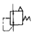
- 파일럿작동형 감압밸브
- 릴리프붙이 감압밸브
- 일정비율 감압밸브
- 파일럿 작동형 시퀀스밸브
(정답률: 42%)
3. 검출체가 작동 영역에 진입하는 순간부터 센서출력이 상태 변화를 가져오는 순간까지의 시간 지연을 무엇이라고 하는가?
- 주기
- 초기지연
- 복귀시간
- 응답시간
(정답률: 72%)
4. 다음에 열거된 제어방식 중 메모리 기능이 없고 부울대수 방정식을 이용하여 해결가능한 제어는?
- 시간에 따른 제어
- 파일럿 제어
- 조합제어
- 아나로그 제어
(정답률: 69%)
5. 소용량 펌프와 대용량 펌프를 동일 축상에 조합시켜 각각 다른 유압원이 필요한 경우에 사용되는 펌프는?
- 단단 베인 펌프
- 단연 베인 펌프
- 2연 베인 펌프
- 2단 베인 펌프
(정답률: 44%)
6. 빛을 이용하여 물체 유무를 검출하거나 속도,위치결정에 응용되는 센서는?
- 유도형 센서
- 용량형 센서
- 광 센서
- 리드 스위치
(정답률: 86%)
7. 다음 밸브의 명칭은 ?
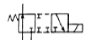
- 2포트 전환밸브
- 3포트 전자 전환밸브
- 4포트 교축 전환밸브
- 5포트 파일럿 전환밸브
(정답률: 69%)
8. 공압 실린더의 고장을 예방하기 위한 방법이 아닌 것은?
- 실린더의 압력강하를 방지하기 위해 가능한 최저속으로 운전한다.
- 실링 교체시 실린더의 내부를 깨끗이 청소한 후 새 윤활유를 주입한다.
- 피스톤 로드는 먼지나 퇴적물로부터 손상을 받지 않도록 주기적으로 청소한다.
- 급유형 실린더의 경우 윤활된 공기를 사용하고 윤활량은 너무 과하지 않도록 한다.
(정답률: 71%)
9. 면적이 10cm2인 곳을 50kgf의 무게로 누를때 면적에 작용 하는 압력은?
- 5kgf/㎝2
- 10kgf/㎝2
- 58gf/㎝2
- 5kgf/m2
(정답률: 71%)
10. 유압장치에서 플래싱(flashing)을 하는 목적은?
- 유압장치내 이물질 제거
- 유압장치의 점검
- 유압장치의 고장방지
- 유압장치의 유량증가
(정답률: 58%)
11. 유압 베인 모터의 1회전당 유량이 50㏄일 때,공급 압력을 80㎏f/㎝2,유량을 30ℓ /min으로 할 경우 최대 회전수(rpm)는 ?
- 700
- 650
- 625
- 600
(정답률: 44%)
12. 직류 전동기 운전시 브러시로부터 스파크가 일어나는 경우와 거리가 먼 것은?
- 전압의 부적당
- 보극의 극성 불량
- 정류자편의 오손
- 정류자와 브러시 접촉 불량
(정답률: 51%)
13. 반경류식 공압 피스톤 모터의 회전력과 관계가 없는 것은 ?
- 공기의 압력
- 로드의 직경
- 피스톤의 수
- 피스톤 행정거리
(정답률: 46%)
14. 다음 중 시간의 변화에 대해 연속적 출력을 갖는 신호는?
- 디지털 신호
- ON-Off신호
- 접점의 개폐
- 아날로그 신호
(정답률: 68%)
15. 공기압에 사용되는 압력조절밸브(감압밸브)의 용도는?
- 회로 내의 압력을 감압,일정하게 유지시킨다.
- 실린더를 순차적으로 작동시킨다.
- 실린더의 속도를 조절한다.
- 압력변화를 전기신호로 바꾸어 주는 변환기 이다.
(정답률: 79%)
16. 프로그램 플로우 챠트(flowchart)에 대한 설명으로 옳은 것은?
- 기계나 장치의 동작을 순서적으로 표현하는 방법이다.
- 그래픽 논리기호의 연결이다.
- 제어의 시간 관계를 표현한다.
- 제어 문제 해결을 위한 컴퓨터이다.
(정답률: 57%)
17. 공압에서 사용되는 기기중 습기에 대하여 친화력을 갖는 실리카 겔,활성 알루미나 등의 고체 건조제를 두 개의 타워 속에 가득 채워 습기와 미립자를 제거하여 초 건조 공기를 토출하며 최대 -70℃ 정도까지의 저노점을 얻을 수 있는 것을 무엇이라 하는가?
- 공랭식 냉각기
- 냉동식 건조기
- 흡수식 건조기
- 흡착식 건조기
(정답률: 49%)
18. 다음 기호 중 열 교환기가 아닌 것은?
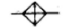
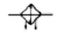
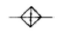
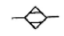
(정답률: 64%)
19. 그림과 같은 복동 실린더의 설명으로 잘못된 것은?
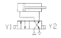
- 솔레노이드 Y1에 전기가 공급되면 실린더는 전진한다.
- 전 후진시 모두 작업이 진행될 수 있다.
- 전진시보다 후진시 속도가 빠르다.
- 전진 행정 보다 후진 행정시 추력이 더 크다.
(정답률: 35%)
20. 다음 중 유압 회로에 발생하는 서지(surge)압력을 흡수할 목적으로 사용되는 회로는?
- 블리드 오프 회로
- 압력 시퀀스 회로
- 어큐물레이터 회로
- 동조 회로
(정답률: 51%)
2과목: 설비진단관리 및 기계정비
21. 윤활유의 열화방지법이 아닌 것은?
- 고온은 가능한 피한다.
- 기름의 혼합 사용은 극력 피한다.
- 신 기계 도입시는 충분히 세척 후 사용한다.
- 교환시는 열화유를 조금 남기고 사용한다.
(정답률: 76%)
22. 흡음식 소음기를 사용하기에 적당한 곳은?
- 냉난방 덕트
- 내연기관의 배기구
- 집진시설의 송풍기
- 헬름홀츠 공명기
(정답률: 45%)
23. 필러 게이지(feelergauge)라고도 하며 작은 홈의 간극을 점검하고 측정하는데 사용되는 게이지는?
- 블록게이지
- 높이게이지
- 틈새게이지
- 센터게이지
(정답률: 73%)
24. 통풍기(fan)에 관한 설명 중 올바르지 않은 것은?
- 시로코 팬(sirocofan)은 왕복식 통풍기이다.
- 터보 팬(turbofan)은 원심형 통풍기 중 효율이 가장 좋다.
- 원심식 통풍기는 임펠러(impeller)의 회전에 의해 기체를 이송시킨다.
- 축류식 통풍기는 임펠러(impeller)의 회전에 의해 기체를 이송시킨다.
(정답률: 39%)
25. 윤활관리의 목적과 거리가 먼 것은?
- 적유
- 적기
- 적량
- 적압
(정답률: 53%)
26. 다음 중 정비용 측정기구에 해당하는 것은 ?
- 파이프 렌치(pipewrench)
- 오스터(oster)
- 베어링 체커(bearingchecker)
- 플레어링 툴 세트(flaringtoolset)
(정답률: 65%)
27. 플랜지 커플링에 다이알 게이지를 사용하여 중심내기를 할때 다이알 게이지의 허용 편심 오차의 한계는 몇 mm인가?
- 0.001∼0.01
- 0.01∼0.1
- 0.15∼0.2
- 1.5∼2.0
(정답률: 25%)
28. 주파수,진폭 및 위상이 같은 두 진동이 합성되면 어떠한 진동 형태로 되는가?
- 주파수와 진폭은 변하지 않고 위상이 변한다.
- 진폭과 위상은 변동 없고 주파수만 두 배로 증가한다.
- 주파수,진폭 및 위상이 두 배로 증가한다.
- 주파수와 위상은 변동 없고 진폭만 두 배로 증가한다.
(정답률: 59%)
29. 새 펌프를 구입하여 설치후 시험가동중에 축봉부에 누설이 생겨 목표한 양정으로 올리지 못하여 메카니컬 시일(Mechanicalseal)을 교체하여 가동하였다.표에서 어느 구역의 고장기에 해당하는가?
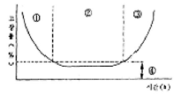
- ① 구역
- ② 구역
- ③ 구역
- ④ 구역
(정답률: 43%)
30. 설비가 열화하여 성능 저하를 초래하는 상태를 조기 조치 하기 위해 행해지는 급유,부품교환,청소 등이 이루어지는 정비는?
- 사후정비
- 개량정비
- 일상정비
- 보전예방
(정답률: 46%)
31. 버니어 캘리퍼스의 종류 중 부척이 홈형으로 되어 있으며 외측 측정용 조,내측 측정용 조,깊이 바가 붙어있는 것은?
- M형
- CB형
- CM형
- MT형
(정답률: 48%)
32. 급유불량으로 나타나는 현상은?
- 조립불량
- 축의 굽힘
- 강도 부족
- 베어링 발열
(정답률: 70%)
33. 다품종 소량생산에 적합한 설비배치의 형태는?
- 제품별 배치
- 제품 고정형 배치
- 라인별 배치
- 기능별 배치
(정답률: 48%)
34. 나사의 회전각과 딤블(thimble)직경의 눈금으로 확대하여 측정하는 측정기는?
- 블록게이지
- 다이알게이지
- 버어니어캘리퍼스
- 마이크로미터
(정답률: 50%)
35. 설비 보전용 자재의 관리상 특징이 아닌 것은?
- 감속기,모터 등은 고장시 교체하고 교체품은 수리하여 예비품으로 사용할 수 있다.
- 자재의 품목 및 수량의 구입계획을 수립하기가 쉽다.
- 예비품이 사용되지 않고 폐기될 수도 있다.
- 연간 사용빈도가 낮다
(정답률: 50%)
36. 축 고장의 원인중 조립 정비불량에 속하지 않은 것은?
- 풀리,기어,베어링 등 끼워맞춤 불량
- 휜 축 사용
- 재질 불량
- 급유불량
(정답률: 45%)
37. 보전작업표준을 설정하고자할 때 사용하지 않는 방법은?
- 작업 연구법
- 경험법
- 실적 자료법
- 작업 순서법
(정답률: 47%)
38. 윤활유의 작용이 아닌 것은 ?
- 감마작용
- 냉각작용
- 방독작용
- 응력 분산작용
(정답률: 67%)
39. 고장,정지 또는 유해한 성능저하를 가져오는 상태를 발견하기위한 설비의 주기적인 검사로 초기단계에서 이러한 상태를 제거 또는 복구시키기 위한 보전은?
- 사후보전
- 개량보전
- 예방보전
- 생산보전
(정답률: 74%)
40. 윤활개소의 혼입 이물질을 무해한 형태로 바꾸든가 외부로 배출하여 깨끗이 해주는 작용은?
- 냉각작용
- 방청작용
- 감마작용
- 청정작용
(정답률: 61%)
3과목: 공업계측 및 전기전자제어
41. 그림과 같은 연산증폭기의 폐루프 전압이득은?
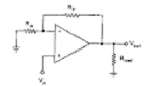
- -(RF/Rin)
- -(Rin/RF)
- (RF/Rin)+1
- (Rin/RF)+1
(정답률: 32%)
42. 다음 내용 설명 중 옳지 않은 것은 ?
- 오버슈트는 응답중에 생기는 입력과 출력사이의 편차량을 말한다.
- 시간지연이란(timedelay)응답이 최초로 희망값의 30% 진행되는데 요하는 시간이다.
- 정정시간(settlingtime)은 응답의 최종값의 허용범위가 5∼10[%]내에 안정되기까지 요하는 시간
- 이상시간(rise time)이란 응답이 희망값의 10[%]에서 90[%]까지 도달하는데 요하는 시간이다.
(정답률: 47%)
43. 다음과 같은 블록선도에서 전달함수는 어느 것인가?
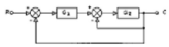
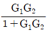
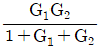
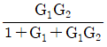
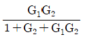
(정답률: 49%)
44. 다음의 회로도에서 입력 A=0,B=1일 때 출력 C,S는 다음 중 어느 것인가? (단, C:자리올림(carry), S:합(sum))
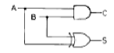
- C=0, S=0
- C=0, S=1
- C=1, S=0
- C=1, S=1
(정답률: 64%)
45. 다음 중 축전기의 정전용량을 C[F],전위차를 V[V],저장된 전기량을 Q[C]라고 할 때 정전 에너지[W]을 나타내는 식중 틀린 것은?
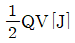
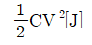
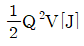
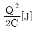
(정답률: 54%)
46. 그림과 같은 블록선도가 의미하는 요소는?
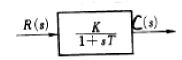
- 1차 빠른요소
- 미분요소
- 1차지연요소
- 2차지연요소
(정답률: 65%)
47. 그림과 같은 반전 증폭기의 입력전압과 출력전압의 비 즉 전압이득을 바르게 표현한 식은?
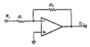
- R2/R1
- -R2/R1
- (1+R2/R1)
- (1-R2/R1)
(정답률: 50%)
48. 변위를 전압으로 변환하는 장치는?
- 더어미스터
- 노즐 플래터
- 차동 변압기
- 베로즈관
(정답률: 77%)
49. 다음 중 역수의 관계가 잘못 짝지어진 것은?
- 저항 R-컨덕턴스 G
- 임피던스 Z-어드미턴스 Y
- 리액턴스 X-서셉턴스 B
- 전압 V-전력 P
(정답률: 60%)
50. 다음의 논리식 중 옳지 않은 것은?
- A+A=A
- A·A=A
- A+
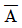
=1 - A·
 =1
=1
(정답률: 61%)
51. 다음 진리표의 게이트는 무엇인가?
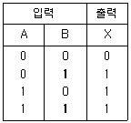
- AND
- OR
- NOR
- NAND
(정답률: 59%)
52. 어느 소자를 나타내는 기호 중 2SKOO에서 K는 무엇을 나타내는가?
- SCR의 음극
- TRIAC의 게이트
- UJT의 이미터
- FET의 N채널
(정답률: 33%)
53. 다음중 회로시험기를 사용하여 측정할 때 주의할 점 중 잘못된 것은?
- 측정할 양에 알맞는 계기를 사용한다.
- 직류용 계기의 단자에 표시되어 있는 극성과 전원의 극성에 주의한다.
- 측정시 지침은 최대 측정범위를 넘도록 조정한다.
- 배율 선택 스위치는 측정값에 알맞게 조절한다.
(정답률: 79%)
54. 압력계의 표준압력계로서 다른 압력계의 교정용으로 사용 되는 것은?
- 브르돈관식 압력계
- 피스톤식 압력계
- 단관식 압력계
- 분동식 압력계
(정답률: 49%)
55. 그림과 같은 압력계에서 유량을 나타내는 식으로 맞는 것은? (단, Pi=입구압력, Po=출구압력)
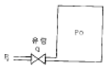
- k(Po+Pi)2
- k(Pi+Po)1/2
- k(Pi-Po)
- k(Pi+Po)
(정답률: 31%)
56. 직류 직권 전동기의 벨트운전을 금하는 이유는?
- 손실이 많이 발생하므로
- 출력이 감소하므로
- 벨트가 벗겨지면 무구속 속도가 되므로
- 과대 전압이 유기되므로
(정답률: 58%)
57. 전동기 직입 기동 회로에서 주 회로에 구성되는 기기가 아닌 것은?
- 배선용 차단기
- 전자 접촉기의 주 접점
- 푸시버튼 스위치
- 열동 계전기
(정답률: 39%)
58. 회전자에 슬립링을 설치하고 외부에 기동저항을 접속하여 기동전류를 제한하는 전동기는?
- 농형 유도전동기
- 권선형 유도전동기
- 단상 유도전동기
- 2중농형 유도전동기
(정답률: 48%)
59. 변압기 기름의 구비조건이 아닌 것은?
- 절연 내력이 클 것
- 점도가 작고 냉각효과가 클 것
- 화학작용으로 산화현상이 있을 것
- 응고점이 낮을 것
(정답률: 69%)
60. 목표값이 미리 정해진 시간적인 변화를 하는 경우 제어량을 그것에 추종시키기 위한 제어는?
- 정치제어
- 추종제어
- 비율제어
- 프로그램제어
(정답률: 42%)
4과목: 기계정비 일반
61. 경화능 향상에 효과적이며 첨가량이 1%이상이면 결정입자를 조대화하여 취성을 크게 하는 성분은?
- Ni
- Cr
- Mn
- Mo
(정답률: 29%)
62. 50kgf의 하중을 받고 처짐이 16mm생기는 코일스프링에서 코일의 평균직경 D=16mm, 소선직경 d=3mm, G=0.84×104kgf/mm2이라 할 때 유효권수 n은 얼마인가?
- 3
- 5
- 7
- 9
(정답률: 29%)
63. 볼베어링에서 베어링 하중을 2배로 하면 수명은 몇 배로 되는가?
- 4배
- 1/4배
- 8배
- 1/8배
(정답률: 27%)
64. 24금이란 순금(Au)몇 %가 함유된 것인가?
- 18
- 24
- 75
- 100
(정답률: 42%)
65. 저널의 지름이 25 mm, 길이가 50 mm, 베어링하중이 3000kgf인 저어널 베어링에서 베어링 압력(kgf/mm2)은?
- 2.4
- 3.0
- 3.6
- 4.2
(정답률: 34%)
66. 축간거리 55㎝인 평행한 두축 사이에 회전을 전달하는 한쌍의 평기어에서 피니언이 124회전할 때 기어를 96회전 시키려면 피니언의 피치원지름을 얼마로 하면 되겠는가?
- 124㎝
- 96㎝
- 48㎝
- 62㎝
(정답률: 34%)
67. 마찰차의 접촉면에 종이,가죽 및 고무 등의 비금속 재료를 붙이는 이유는 무엇인가?
- 마찰각을 작게 하기 위하여
- 마찰차의 마멸을 방지하기 위하여
- 마찰계수를 크게 하기 위하여
- 회전수를 줄이기 위하여
(정답률: 35%)
68. 순철에는 없으며,강의 특유한 변태는?
- A1
- A2
- A3
- A4
(정답률: 34%)
69. 담금질시 냉각의 3단계를 거쳐 상온에 도달하는데 냉각되는 순서로 맞는 것은?
- 증기막단계 → 대류단계 → 비등단계
- 대류단계 → 비등단계 → 증기막단계
- 대류단계 → 증기막단계 → 비등단계
- 증기막단계 → 비등단계 → 대류단계
(정답률: 24%)
70. 담금질된 강의 경도를 증가시키고 시효변형을 방지하기 위한 목적으로 0℃ 이하의 온도에서 처리하는 방법은?
- 저온 담금 용해처리
- 시효 담금처리
- 냉각 뜨임처리
- 심냉처리
(정답률: 45%)
71. 양은(洋銀,Nickel-silver)의 구성 성분은?
- Cu-Ni-Fe
- Cu-Ni-Zn
- Cu-Ni-Mg
- Cu-Ni-Pb
(정답률: 35%)
72. 강에 함유되어 있는 황(S)의 편석이나 분포 상태를 검출하는데 사용되는 검사법은?
- 감마선(γ)검사법
- 설퍼 프린트법
- X-선 검사법
- 초음파 검사법
(정답률: 24%)
73. 마찰차의 응용범위와 거리가 가장 먼 항목은?
- 전달력이 크지 않고 속도비가 중요하지 않은 경우
- 회전속도가 커서 보통기어를 쓰기 어려울 경우
- 양 축간을 자주 단속할 필요가 있을 경우
- 정확한 속도비가 필요할 경우
(정답률: 30%)
74. 주조,단조,리벳이음 등에 비해 용접 이음의 장점으로틀린 것은?
- 사용재료의 두께 제한이 없다.
- 기밀 유지에 용이하다.
- 작업 소음이 많다.
- 사용기계가 간단하고,작업 공정수가 적어 생산성이높다.
(정답률: 45%)
75. 다음 중 비금속 재료는?
- Al2O3
- Au
- Ni
- Co
(정답률: 43%)
76. 폭(b)×높이(h)=10X8인 묻힘키이가 전동축에 고정되어 25,000㎏f.㎜의 토크를 전달할 때,축지름 d는 몇 ㎜ 정도가 적당한가? (단, 키이의 허용 전단응력은 3.7㎏, f/㎜2이며,키이의 길이는 46㎜ 이다.)
- d=29.4
- d=35.3
- d=41.7
- d=50.2
(정답률: 22%)
77. 2톤의 하중을 들어 올리는 나사 잭에서 나사 축의 바깥지름을 구한 것으로 맞는 것은? (단, 허용인장응력 =6㎏ f/㎜2이고,비틀림 응력은 수직응력의 1/3정도로 본다.)
- 24㎜
- 26㎜
- 28㎜
- 30㎜
(정답률: 18%)
78. 켈밋(kelmet)은 베어링용 합금으로 많이 사용된다.성분은 구리(Cu)에 무엇을 첨가한 합금인가?
- 아연(Zn)
- 주석(Sn)
- 납(Pb)
- 안티몬(Sb)
(정답률: 23%)
79. 회전속도가 200rpm으로 10㎰을 전달하는 연강 실체원축의 지름이 얼마 정도인가? (단,허용응력 τ =210㎏f/㎝2이고,축은 비틀림 모멘트 만을 받는다.)
- d=44.3㎜
- d=49.1㎜
- d=54.7㎜
- d=59.8㎜
(정답률: 25%)
80. 다음중 기능성 재료에 해당하지 않는 것은?
- 형상기억 합금
- 초소성 합금
- 제진 합금
- 특수강
(정답률: 31%)